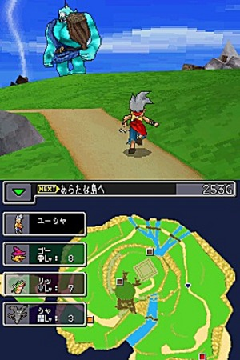
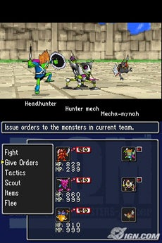
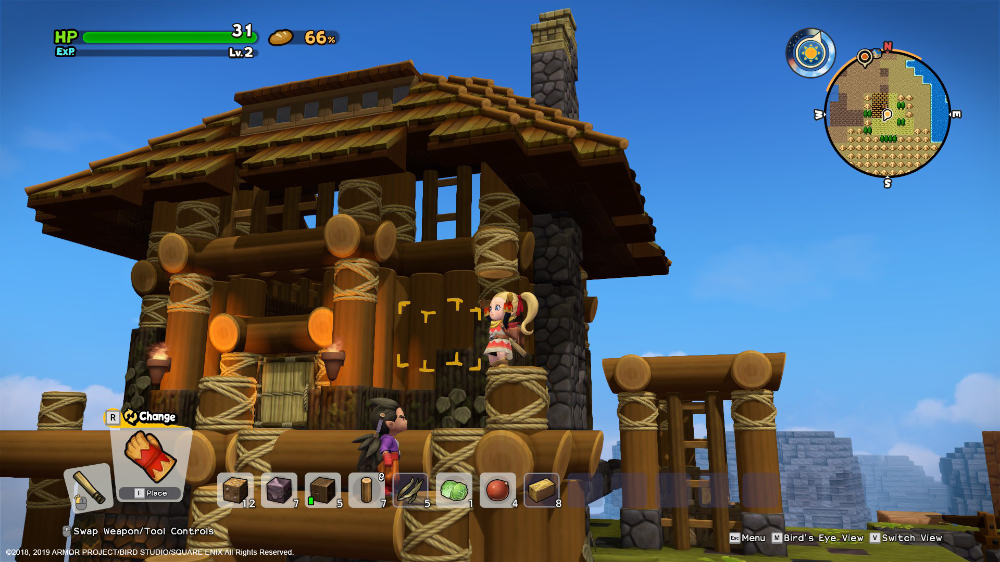
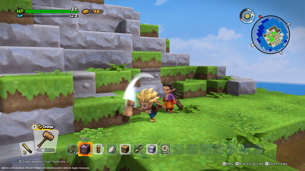

Inicio
Dentro de la saga Dragon quest encontraremos distintas alternativas a los juegos de la saga principal, presentando distintas propuestas siendo estas las que han ido llegando del país nipon, aunque existen muchos más que por desgracia no han llegado a continente occidental.
Dq Monsters: Joker
En este Dragon Quest Monsters Joker vamos a controlar a un joven cuyo padre pertenece a una misteriosa organización llamada CELL y que no tiene, además, un carácter muy afable. Por eso lo conoceremos encerrado en una suerte de calabozo nada más empezar la aventura y posiblemente más decidido que nunca a hacer realidad su sueño de llegar a la competición más importante de lucha de monstruos. Su padre le va a dejar ir, pero a cambio le pide algo: tiene que llevar a cabo una misión secreta para CELL.
La premisa principal, como vemos, es muy parecida a la de casi todos los juegos de captura de criaturas, estilo Pokémon, algo que también se daba en los anteriores Dragon Quest Monsters, donde la historia, la verdad, quedaba relegada en muchas ocasiones a un segundo plano frente a los juegos de rol japoneses tradicionales donde el guión marca un ritmo claro y tiene fuerte peso en su desarrollo. Sin embargo, lo cierto es que según avanzamos en el juego vemos cómo en esta ocasión se trata de la narración como algo más que una simple excusa para salir a cazar bichos, lo que lo sitúa en una posición a medio camino entre el rol japonés tradicional y el rol de tipo pokémon.
De hecho, lo cierto es que el juego está quizás mucho más cerca de un planteamiento tradicional que del de sus antecesores, con un estilo gráfico más cercano a lo visto en las últimas entregas de la saga numerada y un desarrollo que prescinde de mazmorras que se generan automáticamente para conformar un desarrollo mucho más vinculado a la vertiente tradicional de la saga, sin rechazar por ello los elementos diferenciales que los Monsters.
Parte de esto se consigue gracias a que realmente hay una aventura con una historia que va progresando mientras avanzamos en el juego y descubrimos cómo avanza todo, vamos accediendo a nuevas zonas, conocemos a personajes secundarios y, todo, en general, resulta en un experiencia de juego mucho más profunda. En cuanto a su jugabilidad, debemos destacar que se ha prescindido por completo de los combates aleatorios, viendo en los escenarios la presencia de los enemigos, lo que dota a su desarrollo de mucha más agilidad, lo que influye evidentemente en cómo se afronta su sistema de progreso.
Los combates son importantísimos, claro, pero si en algún momento preferimos avanzar en la trama y nos tenemos que desplazar, podemos escoger esquivar a los enemigos e ir directamente a lo que nos interesa. Esta tendencia es cada vez más común en el género, que va suprimiendo todo el factor de combates aleatorios incluso de las sagas más clasicistas. Por supuesto, no sólo hay que luchar, sino también conocer y capturar a las criaturas que habitan este mundo, que en esta ocasión superarán las 200 especies. Algunas de ellas son nuevas y otras regresan, tanto del universo de la saga numerada como de los Dragon Quest tradicionales. Puesto que en Europa no ha habido una distribución de esos títulos, a nosotros nos resultarán todos nuevos, y, por suerte, los que sí hayan tenido saga con los anteriores capítulso sabrán apreciar los nuevos monstruos.
Según los vayamos sumando a nuestro listado, podremos incorporarlos a nuestro equipo de lucha, con un máximo de tres al mismo tiempo (y otros tres para intercambiar, pero cuando no estemos en plena lucha). Por supuesto, estos monstruos se irán entrenando cuanto más los usemos como sucedería en cualquier juego de rol: acumulando puntos de experiencia, mejorando sus habilidades, y recibiendo equipamiento. De esta manera, se va mucho más allá de lo que ofrecen otros juegos de rol con criaturas al proponer más bien un sistema de evolución de personajes tradicional, con toda la profundidad habitual en los juegos de rol nipón, pero aplicado a los 200 monstruos que hay en Dragon Quest Monsters Joker.
La aventura no llevará a recorrer siete islas diferentes, pudiendo explorar sus montañas, mazmorras y cuevas, y aunque en muchos sentidos el juego no consigue transmitir un sentimiento épico (pues es más bien desenfadado y huye de toques melodramáticos casi por completo), lo cierto es que cada una de las islas está llena de posibilidades y ofrece mucho contenido al jugador. Así es como iremos descubriendo los 200 tipos de monstruos, estructurados en ocho especies, que pueblan el mundo del juego. Todo ello teniendo en cuenta que el lugar y el ciclo del día puede influir en qué especies nos van a salir al encuentro, teniendo que jugar tanto de día como de noche.
Los combates son por turnos, con las opciones más clásicas del género. Todo se controla mediante los menús, y podemos escoger entre atacar, defendernos o emplear las habilidades especiales de nuestros monstruos. Es incluso posible definir unos patrones tácticos para cada monstruo de manera que realicen acciones de manera determinada, como no consumir puntos de magia y atacar por otras vías. Por supuesto, el objetivo principal en la mayoría de los combates pasa por reclutar monstruos. Y sí, se trata de reclutar, no de capturar.
Ocultar contenidoEl sistema de reclutamiento pasa por persuadir al monstruo para que se sume a nuestro grupo, y resulta mucho más interesante y evidente desde una perspectiva jugable que otras mecánicas empleadas en juegos del género. Aquí, cada monstruo tiene asignado un porcentaje que podemos entender como el nivel de filiación que siente hacia nosotros. Ese sistema dictamina el porcentaje de posibilidades de que un monstruo decida unirse a nuestro grupo y hace posible que lo podamos intentar con absolutamente todos, en cualquier momento. El sistema hace que tiremos un dado, y en función de la estadística es más o menos probable que tengamos un resultado positivo que haga que el monstruo se venga con nosotros. Nos parece un tratamiento mucho más honesto y transparente del sistema de captura que, como decíamos, se emplea en otros títulos similares.
Ocultar contenidosIr sumando monstruos es importante porque aunque empiezan con habilidades muy genéricas, poco a poco se pueden especializar casi por completo según los empleemos en el juego y desarrollemos sus habilidades especiales. Además, como decíamos antes, el sistema de lucha permite también asignarles estrategias de batalla, pudiendo controlar todo lo que hacen o bien darles unos patrones de actuación hasta tal punto que podemos permanecer pasivos casi por completo si así lo deseamos. Esto es importante porque le da una gran agilidad al juego, y nos recuerda en muchas ocasiones al sistema que se introdujo en Final Fantasy XII, salvando las lógicas distancias. Si tenemos en cuenta que podemos cambiar muy fácilmente entre controlarlo todo o que sea la máquina (a partir de nuestras instrucciones) la que lleve la lucha, vemos cómo de versátil y bien planteado se ha constituido este sistema de lucha, a medio camino entre lo tradicional (algunos tienden a considerar que Dragon Quest es más que clásica, arcaica) y lo novedoso.
Ocultar contenidosDq Builders 2
Dragon quest Builders se trata de un RPG de construccion inspiracion en Minecraft. La historia comienza con nuestro protagonista, hombre o mujer, es un joven aprendiz de constructor que ha sido capturado en un barco de los Hijos de Hargon. Tras un breve tutorial el barco sufre un accidente y los prisioneros terminan en una extraña playa. Seremos uno de los pocos supervivientes del naufragio, pero allí encontraremos a un misterioso personaje sin recuerdos de su pasado: Malroth, que se unirá a nuestro equipo como guerrero.
Con nuestra habilidad para cocinar, construir edificaciones y utensilios, el grupo logrará sobreponerse a la situación. Pronto descubrirán que el protagonista dispone de esta isla a su antojo y navegarán en busca de nuevos horizontes. La aventura no ha hecho más que comenzar.
La fórmula de Builders 2 es muy similar al original. Olvida el rol por turnos clásico de Dragon Quest, aquí el progreso se hace cumpliendo misiones que piden algún tipo de requisito relacionado con la construcción. Y claro, para construir se necesita materia prima que se obtiene de multitud de elementos del escenario, ya sean rocas de diverso tipo, minerales e incluso objetos ya creados.
Fabricar algo es sencillo siempre que tengamos la receta: basta con golpear objetos para extraer su esencia y acercarse a una mesa de construcción. Selecciona el nuevo objeto, gasta la cantidad requerida de material y ¡voilà! Podrás cumplir una misión o al menos estar más cerca de ello. Es un juego muy guiado en la ruta principal al margen hay muchos objetivo opcionales y de manera progresiva vamos aprendiendo lo que se puede hacer para que luego, si lo deseamos, demos rienda suelta a nuestra imaginación con las construcciones.
Como en Minecraft, del cual sigue heredando la interfaz, hay cierto componente de supervivencia. Es posible cocinar los alimentos y el combate es muy básico, golpear con nuestra espada con sencillos combos y algunos ataques cargados. Eso sí, el juego nos deja claro que nuestro papel no es el de un héroe fuerte y destinado a la guerra Malroth, que nos acompaña en la batalla.
Square Enix también ha señalado que este este es un guiño a la esencia de Dragon Quest II, el primero en la saga que permitía reclutar a miembros del grupo, lo que hará la construcción menos solitaria y más rápida.
Esto da un nuevo enfoque más abierto y libre que en Builders, pues podrás tomar el barco para visitar otras islas principales con algún tipo de temática (huertos, minería, etc.) o de exploración (aleatorias), volver a tu isla y entretenerte en decorar tu hogar de una manera espectacular. Después de devolver la alegría a cada isla ampliaremos nuestro repertorio de recetas y sumaremos nuevos personajes para nuestra base. Builders 2 también incluye funciones sociales para ver lo que hace la comunidad. Dispone de un modo fotográfico similar al que encontramos en otros muchos juegos, con ajustes de cámara, desenfoques y filtros de colores, para capturar las mejores instantáneas de nuestras obras maestras. Desde un tablón podrás compartir la fotografía, ver las creaciones de otros jugadores e incluso participar en algunos concursos fotográficos. Durante las pantallas de carga veremos las genialidades de la comunidad, así que no dudes en subir las instantáneas.
Existen muchos otros cambios pequeños que hacen más cómoda la exploración y minería de materiales. Por ejemplo nuestro acompañante lucha contra criaturas cercanas si nosotros hemos derrotado a un enemigo, y si recolectas algún material él también lo hará (siempre que le sea posible), lo que agiliza mucho la obtención de recursos. La espada y las herramientas utilizan botones diferentes y no sufren desgaste, el minimapa ayuda a orientarse mejor, hay viaje rápido sin necesidad de utilizar un objeto, puedes planear y bucear, construir vehículos, resolver puzles para obtener monedas que se intercambian por regalos, una flauta nos indica la localización de ítems y hay un mejor comportamiento de los NPC en su vida diaria, la ayuda con las tareas cotidianas e incluso la construcción y defensa frente las oleadas de monstruos. Estos son sólo algunas de las muchas novedades que harán la vida más fácil a quienes se dediquen a explorar cada rincón de los mapas.
Dq Heroes: El infortunio del Árbol del mundo y la raíz del mal
Dragon Quest Heroes es una mezcla entre el sistema de combate hack and slash que posee la saga Dynasty Warriors de Koei Tecmo con los personajes, monstruos y universo de la saga Dragon Quest. El juego cuenta con un gran número de elementos RPG, tales como subir niveles para mejorar sus estadísticas y aprender nuevas habilidades, tiendas en las que comprar equipamiento, etc. El juego cuenta con 13 personajes jugables, cada uno con armas y habilidades únicas. pero muchos otros personajes aparecen como puntos de apoyo.

El juego se desarrolla en el Reino de Arba, donde la humanidad y los monstruos viven en paz. Un día, los monstruos comienzan a atacar a la humanidad. Los planes del nefasto Velasco son sumir al mundo en la oscuridad y tomar el control de todos los monstruos con el fin de liberar a Lóbreg, el señor de la noche. Luceus o Aurora se unirán a un gran grupo de personajes de anteriores entregas de la saga Dragon Quest para así derrotar a los monstruos y salvar el mundo.